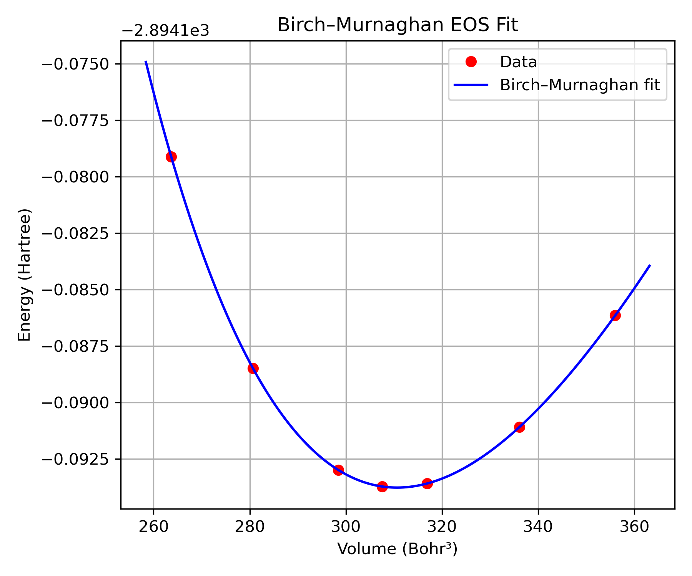

Equation of State using Birch-Murnaghan EOS#
Dataset Download#
The complete dataset (inputs, scripts, and example workflow) is available here:
Download FeNi3 EOS tutorial files
The archive contains all files required to reproduce the calculation for the FeNi3 alloy in the L12 phase.
Overview#
This tutorial describes how to compute the equation of state (EOS) by fitting total energy vs. volume data using the Birch-Murnaghan EOS.
The goal is to determine:
Equilibrium volume \(V_0\)
Minimum energy \(E_0\)
Bulk modulus \(B_0\)
Pressure derivative \(B_0'\)
Required Files#
File |
Description |
Usage |
|---|---|---|
i_mst |
Main input file |
Controls the simulation |
Evec_input.dat |
Moment direction data |
|
Fe_mt_v |
Fe potential |
|
Ni_mt_v |
Ni potential |
|
position.dat |
Structure file |
Atomic positions |
volume.dat |
Volume scaling factors |
Scales lattice constant |
job.sh |
Job submission script |
Adjust for cluster and MPI |
job-submit |
Batch execution script |
Run multiple volume calculations |
extract.sh |
Data extraction script |
Generates energy-volume data |
eos.py |
EOS fitting script |
Computes equation of state |
Step 1: Extract Dataset#
tar -xzf FeNi3_EV.tar.gz
Step 2: Prepare Volume Scaling#
Edit volume.dat:
0.94
0.96
0.98
1.00
1.02
1.04
1.06
The lattice constant scales as:
\(a = a_0 \times s\)
Step 3: Configure Input File#
Edit i_mst:
Set potentials
Ensure SCF calculation
Use tight convergence
Step 4: Configure Job Script#
mpirun -np 32 ./mst.x > output.log
MPI tasks should satisfy:
\(N_{\text{MPI}} = k \times N_{\text{atoms}}\)
Step 5: Run Calculations#
./job-submit
Step 6: Extract Energy-Volume Data#
./extract.sh
Output:
Volume, Energy
V_1, E_1
V_2, E_2
Step 7: Fit Birch-Murnaghan EOS#
python eos.py
The EOS is given by:
\(E(V) = E_0 + \frac{9 V_0 B_0}{16} \left[ \left( \left( \frac{V_0}{V} \right)^{2/3} - 1 \right)^3 B_0' + \left( \left( \frac{V_0}{V} \right)^{2/3} - 1 \right)^2 \left( 6 - 4 \left( \frac{V_0}{V} \right)^{2/3} \right) \right]\)
{kind=link}

Energy vs. volume curve for FeNi3 in the L12 phase. The discrete points correspond to calculated total energies at different volumes, while the smooth curve represents the Birch-Murnaghan EOS fit. The minimum of the curve gives the equilibrium volume \(V_0\).#
Outputs:
\(V_0\)
\(E_0\)
\(B_0\)
\(B_0'\)
Workflow Summary#
FeNi3_EV.tar.gz -> extract -> run jobs -> extract.sh -> result.csv -> eos.py